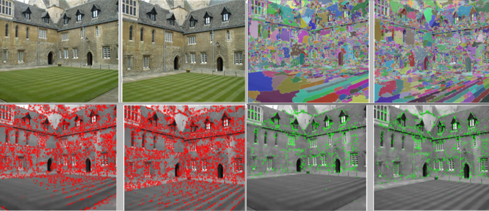

Segmentation based features for wide-baseline multi-view reconstruction
Armin Mustafa, Hansung Kim, Evren Imre and Adrian Hilton Centre for Vision, Speech & Signal Processing University of Surrey, United Kingdom appeared atInternational Conference on 3D Vision (3DV) 2015 (ORAL)
Abstract
A common problem in wide-baseline stereo is the sparse and non-uniform distributions of correspondences when using conventional detectors such as SIFT, SURF, FAST, and MSER. In this paper, we introduce a novel segmentation based feature detector SFD that produces an increased number of ‘good’ features for accurate wide-baseline reconstruction. Each image is segmented into regions by over-segmentation and feature points are detected at the intersection of the boundaries for three or more regions. Segmentation-based feature detection locates features at local maxima giving a relatively large number of feature points which are consistently detected across wide-baseline views and accurately localised. A comprehensive comparative performance evaluation with previous feature detection approaches demonstrates that: SFD produces a large number of features with increased scene coverage; detected features are consistent across wide-baseline views for images of a variety of indoor and outdoor scenes; and the number of wide-baseline matches is increased by an order of magnitude compared to alternative detector-descriptor combinations. Sparse scene reconstruction from multiple wide-baseline stereo views using the SFD feature detector demonstrates at least a factor six increase in the number of reconstructed points with reduced error distribution compared to SIFT when evaluated against ground-truth and similar computational cost to SURF/FAST.
Paper
 Segmentation based features for wide-baseline multi-view reconstruction
Armin Mustafa, Hansung Kim, Evren Imre and Adrian Hilton
3DV 2015


Data
Data used in this work can be found in the CVSSP 3D Data Repository.Citation
@inproceedings{Mustafa15,
author = {Mustafa, A. and Kim, H. and Imre, E. and Hilton, A.},
title = {Segmentation based features for wide-baseline multi-view reconstruction},
booktitle = {3DV},
year = {2015}
}